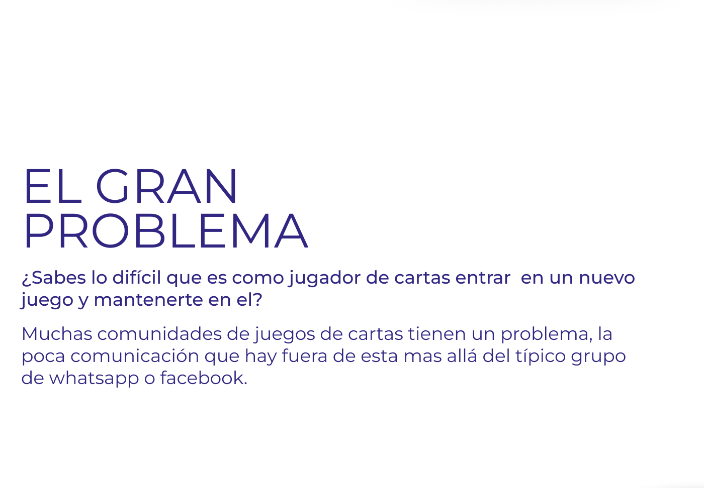
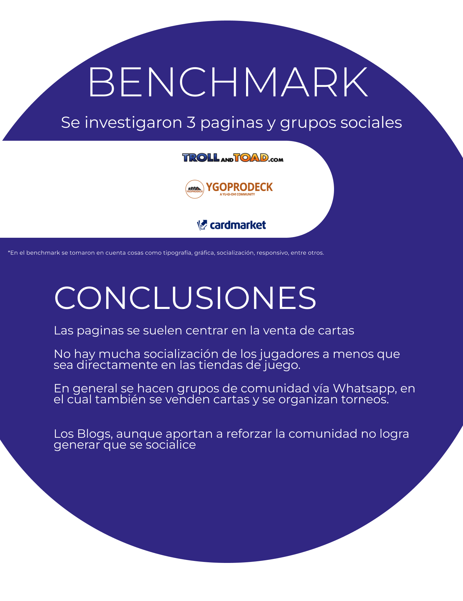
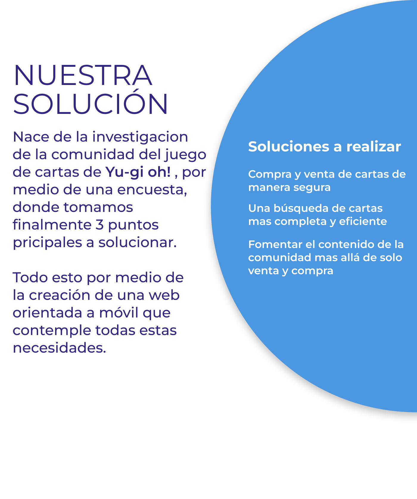
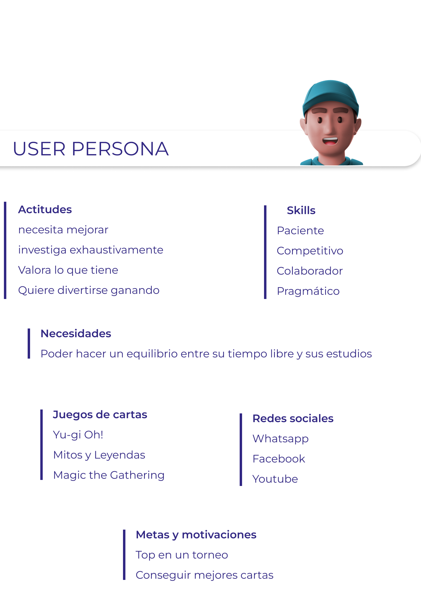
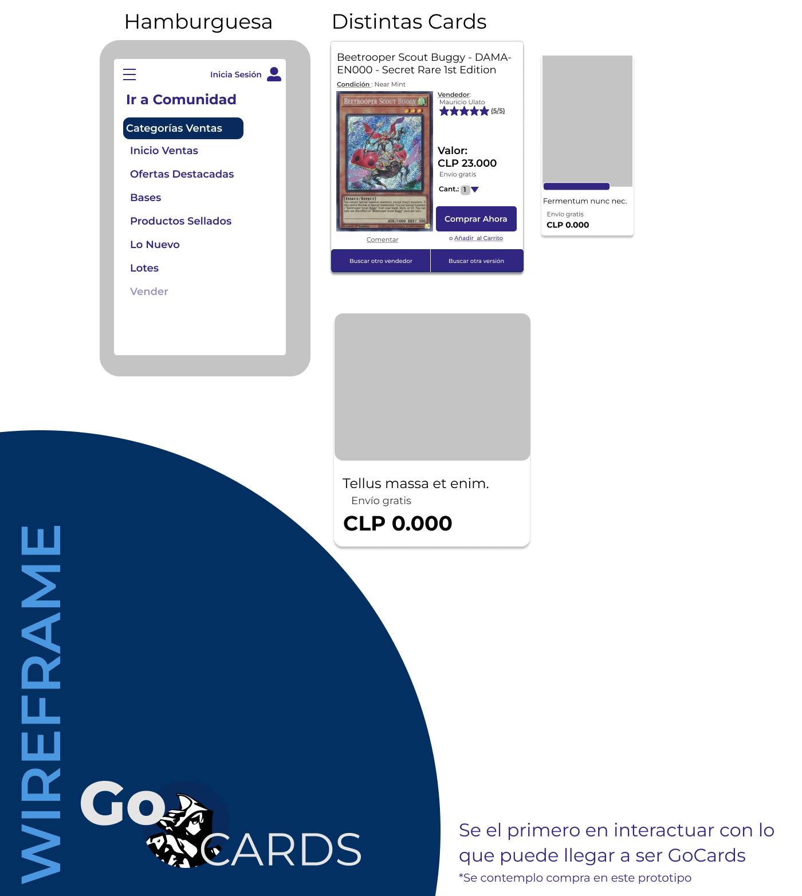

GoCards: Marketplace de Cartas Coleccionables & Comunidad
Resumen del Caso de Estudio
GoCards es una plataforma e-commerce orientada a móvil diseñada para resolver la fragmentación en la compra y venta de cartas coleccionables (TCG). Nacido de una investigación con jugadores activos de Yu-Gi-Oh!, el proyecto unifica la búsqueda rápida de cartas específicas, la garantía de transacciones seguras entre usuarios y un espacio de aprendizaje y socialización comunitaria.

info 01 / Ficha Técnica del Proyecto
E-Commerce & Community ArchitectureEl Gran Problema de la Comunidad TCG
¿Sabes lo difícil que es como jugador de cartas entrar en un nuevo juego y mantenerte en él?
Muchas comunidades de juegos de cartas tienen un problema central: la escasa comunicación y soporte que existe fuera del entorno físico de juego, limitándose a los típicos grupos informales de WhatsApp o Facebook.
- cancel Barrera de entrada para principiantes: Desconocen el metajuego, qué cartas comprar o cómo armar un deck viable sin gastar de más.
- cancel Comercio informal riesgoso: Las ventas en grupos de Facebook no ofrecen protección de pago, trazabilidad ni garantías del estado real de la carta.
- cancel Comunidades fragmentadas: Las discusiones estratégicas se pierden entre miles de mensajes sin organizar.

Benchmark de Competidores & Conclusiones
Se analizaron en profundidad 3 referentes del mercado: YGOPRODeck, Cardmarket y grupos comunitarios en redes sociales. Se evaluaron factores críticos de tipografía, gráfica, socialización, experiencia responsive y usabilidad.

Foco Exclusivo en Ventas Frías
Las páginas comerciales se centran únicamente en vender cartas mediante tablas numéricas áridas. No existe espacio para la interacción de los jugadores fuera de las tiendas físicas.
Ventas Desprotegidas en WhatsApp
La comunidad recurre a grupos de chat para socializar, pero terminan comprando y vendiendo sin intermediario de confianza ni cálculo de envíos, sufriendo pérdidas frecuentes.
Los Blogs Tradicionales no Socializan
Los sitios con artículos aportan información estática pero son unidireccionales; no generan sentido de pertenencia ni facilitan conseguir la carta mencionada en la guía.
Nuestra Solución: Los 3 Pilares de GoCards
La solución nace directamente de la investigación con la comunidad de jugadores de cartas coleccionables (Yu-Gi-Oh!) por medio de encuestas estructuradas y entrevistas a jugadores de tienda.
A partir de los datos recolectados, se definieron 3 soluciones prioritarias integradas en una experiencia web orientada a dispositivos móviles (Mobile-First):
1. Compra y Venta Segura
Protección mutua entre usuarios, calificación verificada de vendedores y transparencia de costos de envío.
2. Búsqueda Completa y Eficiente
Filtro multicapa por nombre, edición, rareza, estado de conservación y comparador instantáneo de versiones.
3. Fomentar el Contenido Comunitario
Artículos de estrategia de metajuego, guías competitivas y enlaces directos para adquirir las cartas recomendadas.

User Persona: El Jugador Competitivo

psychology Actitudes & Comportamiento
- • Necesidad constante de mejorar su nivel de juego competitivo.
- • Investiga exhaustivamente listas de decks, combos y tendencias del meta.
- • Valora el cuidado y condición de sus cartas coleccionables.
- • Busca maximizar la diversión logrando victorias consistentes.
verified_user Skills & Rasgos
flag Metas & Motivaciones
Lograr colocarse en el Top de torneos presenciales, conseguir mejores cartas para su baraja sin arriesgarse a fraudes y equilibrar su tiempo de estudio o trabajo con su afición favorita.
Guía de Estilos: Colores & Tipografía

UI Kit: Sistema de Navegación & Elementos Móviles
Diseño atómico de componentes UI optimizados para pantallas táctiles: barra de navegación superior con buscador persistente, menú hamburguesa categorizado, tarjetas de contenido de comunidad, badges promocionales y estados vacíos.

Propuesta de Valor & Contenido Comunitario
"Marketplace para juego de cartas coleccionables reforzando la comunidad y asegurando sus ventas"
A diferencia de las plataformas tradicionales que solo listan inventario, la pantalla de inicio de GoCards saluda al usuario con artículos de estrategia escrita por miembros destacados de la comunidad (*"Tribrigade Competitivo: De principiante a experto en 1 día"*).
Esto genera retención orgánica, fidelización de usuarios y elimina el sesgo transaccional frío de los marketplaces convencionales.

Flujo Transaccional: Catálogo, Ficha & Checkout en 3 Pasos
Una compra segura y correcta entre jugadores. Cada etapa del embudo de conversión fue refinada para entregar máxima certeza sobre el estado de la carta, reputación del vendedor y costos finales.

Sección Lo Más Vendido
Muestra cartas clave en tendencia competitiva (AA-ZEUS, Ice Dragon's Prison) con badges de Vendedor destacado, 5 estrellas y precio claro en pesos chilenos (CLP).
Comparador de Vendedores
Ficha para Beetrooper Scout Buggy (Secret Rare) que indica vendedor (Mauricio Ulato ★★★★★ 5/5), condición Near Mint y botones para "Buscar otro vendedor" o "Buscar otra versión".
Carro, Entrega & Pago
Progreso visual sin distracciones, control numérico de unidades y recomendación inteligente de cartas complementarias (Joker's Knight, Lightning Storm, True Light).
Validación & Prototipo Interactivo
Sé el primero en interactuar con lo que puede llegar a ser GoCards
El flujo de compra completo fue prototipado y validado en Figma con usuarios reales de tiendas de cartas coleccionables, contemplando la interacción desde la pantalla de inicio hasta el carrito de compras y la navegación del menú hamburguesa.

preview Publicación Original en Behance
ID: 143308471Diseñemos una experiencia centrada en tus usuarios
Combino investigación cualitativa profunda, sistemas de diseño atómicos y arquitectura transaccional para maximizar la confianza y la conversión de tu producto digital.